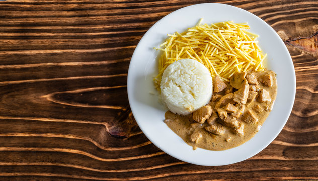

Strogonoff

Descrição
De origem russa, o strogonoff de carne se tornou uma receita queridinha dos brasileiros.
Sugestão para o almoço ou jantar, o segredo para o prato ficar bastante saboroso é caramelizar a carne antes de incluir os ingredientes do molho.
Ingredientes
- 1 quilo de alcatra em tiras
- Sal a gosto
- Pimenta-do-reino a gosto
- Alho picado a gosto
- 1 colher de sopa de azeite
- 1 colher de sopa de açúcar
- 2 xícaras de chá de molho de tomate
- Champignon a gosto
- 2 colheres de sopa de ketchup
- Mostarda a gosto
- 2 caixas de creme de leite
Modo de Preparo
- Tempere 1 quilo de alcatra em tiras com sal, pimenta-do-reino e alho picado a gosto. Misture e reserve.
- Em uma panela, coloque 1 colher de sopa de azeite e derreta 1 colher de sopa de açúcar.
- Após o açúcar derreter, acrescente a carne temperada e deixe refogar até dourar.
- Depois, adicione 2 xícaras de chá de molho de tomate, champignon a gosto, 2 colheres de sopa de ketchup e mostarda a gosto. Misture e deixe aquecer.
- Desligue o fogo e acrescente 2 caixas de creme de leite. Misture e sirva em seguida.